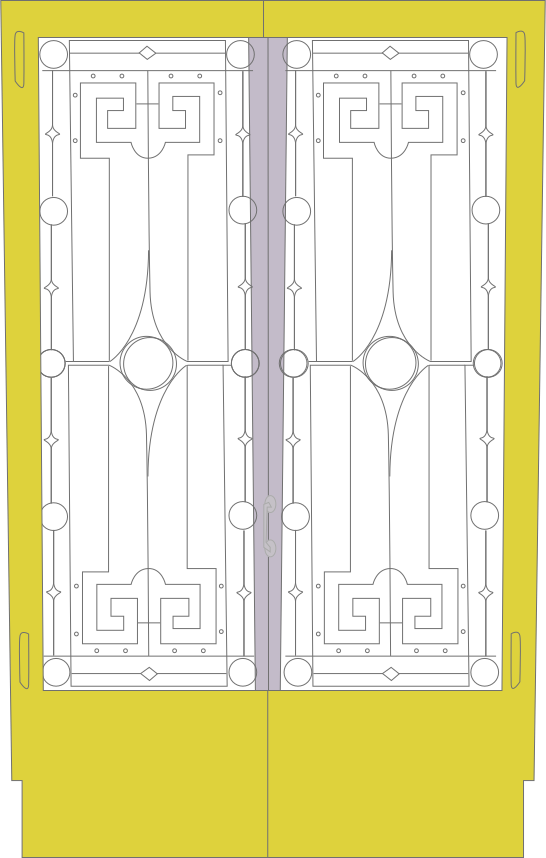

Ressources
Outils ◌
dossier
ZIP
à télécharger → code de base pour commencer
Visual Code Studio
→ éditeur de code gratuit
Netlify drop
→ mettre son site en ligne
Google Docs
→ pour partager entre vous des liens
Drive pour déposer les captures de vos portes
Liens utiles ◌
Free Code Camp
DevDocs
Shapes of CSS
W3 Schools
Livre de SuperHi
Eloquent Javascript
l’essai de Laurel Schwulst en EN
‘My website is a shifting house next to a river of knowledge - what could yours be?’
l'essai de Laurel Schwulst en FR
PDF
Open Source Web Fonts ◌
Libre Fonts by Womxn de Loraine Furter
Velvetyne
Google Fonts
Use & Modify
Font squirrel